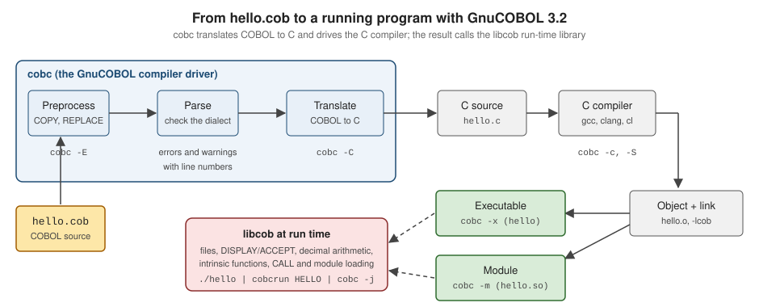

Getting Started
|
This content was generated with the assistance of AI and should be verified against the official documentation before being relied on in production. |
This page is written against ISO/IEC 1989:2023 (edition 3, January 2023; an upcoming 4th edition is in ballot), GnuCOBOL 3.2 (28 July 2023, the latest release) for everything that is run, and IBM Enterprise COBOL for z/OS 6.5 for the remarks about the mainframe. Every program on it was compiled and run on 2026-10-20 with cobc (GnuCOBOL) 3.2.0 built from the release tarball, with cobc -x -Wall unless the text says otherwise; the programs that are deliberately wrong say so. It is the first stop of this reference: it gets a working compiler, shows how a COBOL source becomes a program, and reads what the compiler says when something is wrong. The language itself starts on Program Structure and Divisions, and the columns of the source line are explained on Reference Format: Fixed and Free.
Throughout the section the examples follow one small original scenario, Circulation, the back office of a public library: a book master file (BOOKMAST), a member master file (MEMBMAST) and a file of loan transactions (LOANTRAN). The first Circulation program is on this page. The section index, COBOL, lists the recommended reading order.
Why start with GnuCOBOL
Enterprise COBOL for z/OS only runs on a mainframe, so most readers cannot run it at their desk. GnuCOBOL is a free compiler that runs on Linux, macOS, Windows and other systems, and it accepts the same fixed-format, IBM-compatible syntax that the examples of this reference use. That is why every portable example of the section is compiled and run with GnuCOBOL 3.2, and why code that only exists on z/OS (JCL, EXEC SQL, EXEC CICS, VSAM utilities) is labelled "z/OS; not run here" and checked against IBM’s manuals instead.
GnuCOBOL is not Enterprise COBOL. It translates COBOL to C and lets a C compiler produce the machine code (see How cobc turns a source into a program), it runs on ASCII machines unless told otherwise, and it has its own extensions and its own dialect files. Where the two differ in a way that matters to a beginner this page says so (GnuCOBOL versus Enterprise COBOL for a beginner), and Compilers and Dialects covers the full picture.
Where the books this section draws on are outdated: Taulli’s Modern Mainframe Development (2022) presents OpenCobolIDE as the personal-computer environment. That IDE is unmaintained; the current route is GnuCOBOL 3.2 with a general editor such as Visual Studio Code (see Modern Tooling: VS Code and Zowe). The book also sends the learner to IBM’s former 180-day free z/OS access, which has been replaced by IBM Z Xplore (see Free ways to try z/OS).
Installing GnuCOBOL 3.2
GnuCOBOL 3.2 was released on 28 July 2023 and is, at the date of this page, still the newest release; the project’s download directory at ftp.gnu.org lists nothing newer. Check which version a package gives you before relying on a feature: cobc --version prints it.
| Platform | Command | Notes |
|---|---|---|
macOS |
|
Homebrew’s |
Debian |
|
Debian trixie ships |
Ubuntu |
|
Ubuntu is a Debian derivative and uses the same package names, but which release each Ubuntu version carries was not verified for this page. Run |
Windows |
WSL, or a source build |
The simplest route is Windows Subsystem for Linux with Debian or Ubuntu and the commands above. The GnuCOBOL project also publishes |
Any Unix, from source |
|
Needs a C compiler (GCC or Clang), GNU make and the development packages of GMP and Berkeley DB (or VBISAM) for indexed files, plus ncurses for the screen section. Download |
On Debian and Ubuntu the plain gnucobol package is only a dependency package for "the default GnuCOBOL", and a gnucobol4 package also exists. Do not install gnucobol4: it is a snapshot of an unreleased 4.0 branch from 2020 (version 4.0~early~20200606), not a newer GnuCOBOL than 3.2. Naming gnucobol3 explicitly avoids the ambiguity.
Building from the release tarball is the same on every Unix-like system. This is the recipe used to produce the compiler that ran every example of this page, inside a Debian container:
sudo apt install build-essential libgmp-dev libdb-dev libncurses-dev libxml2-dev libjson-c-dev
curl -fsSLO https://ftp.gnu.org/gnu/gnucobol/gnucobol-3.2.tar.xz
tar xf gnucobol-3.2.tar.xz
cd gnucobol-3.2
./configure --prefix=/usr/local
make
sudo make install
sudo ldconfig
cobc --versionSource: GnuCOBOL Manual: Getting started
ldconfig makes the new libcob shared library visible to the loader on Linux; on macOS it is not needed. cobc --version must print cobc (GnuCOBOL) 3.2.0 (the third number is the patch level, not a fourth release).
cobc (GnuCOBOL) 3.2.0
Copyright (C) 2023 Free Software Foundation, Inc.
License GPLv3+: GNU GPL version 3 or later <https://gnu.org/licenses/gpl.html>
This is free software; see the source for copying conditions. There is NO
warranty; not even for MERCHANTABILITY or FITNESS FOR A PARTICULAR PURPOSE.
Written by Keisuke Nishida, Roger While, Ron Norman, Simon Sobisch, Edward Hart
Built Oct 20 2026 12:22:52
Packaged Jul 28 2023 17:02:56 UTC
C version "14.2.0"The "Built" line is the date of the local build and the "Packaged" line is the release date of the tarball. cobc -i prints more: the C compiler it will call, the library path and the directory of the dialect configuration files.
"Hello, world!"
A COBOL program has up to four divisions; the smallest useful one needs only IDENTIFICATION DIVISION (to name it) and PROCEDURE DIVISION (to do something). The classic layout puts division headers, section names and paragraph names in Area A (columns 8 to 11) and statements in Area B (column 12 onwards); column 7 is the indicator area, where an asterisk makes the whole line a comment, and columns 73 to 80 are ignored. This is fixed reference format, the format of every example of the section except where a page says otherwise.
* HELLO - the smallest useful COBOL program (fixed format).
IDENTIFICATION DIVISION.
PROGRAM-ID. HELLO.
PROCEDURE DIVISION.
DISPLAY "Hello, world!"
STOP RUN.Source: GnuCOBOL Manual: Hello, world!
PROGRAM-ID names the program; DISPLAY writes its operands to standard output; STOP RUN ends the run unit and returns control to the operating system. Save it as hello.cob, compile it and run it:
cobc -x -Wall hello.cob
./helloHello, world!The same program in free format has no columns: a line starts anywhere, and a comment starts with *> (which may follow code on the same line). It must be compiled with -free:
*> HELLOFREE - the same program in free format.
IDENTIFICATION DIVISION.
PROGRAM-ID. HELLOFREE.
PROCEDURE DIVISION.
DISPLAY "Hello, world!"
STOP RUN.Source: GnuCOBOL Manual: Source format
cobc -x -free -Wall hellofree.cob
./hellofreeHello, world!Free format is part of the standard since COBOL 2002, but the examples of the section use fixed format, the classic mainframe layout with the column rules above, so that they run unchanged on both compilers (whether a given Enterprise COBOL release accepts free format is not claimed here; check its Language Reference). The format can also be chosen by name with -fformat=free and -fformat=fixed, and -free is the short form of the first. GnuCOBOL 3.2.0 additionally recognised the free-format source above without any option and printed note: free format detected; the manual still says that -free is required, so pass it. Feeding free-format source to the fixed-format reader is the usual cause of a wall of "invalid indicator" errors (see Reading cobc error messages).
How cobc turns a source into a program
cobc is a driver, not a machine-code compiler. It reads the COBOL source, expands COPY and REPLACE, parses the program, checks it against the chosen dialect and translates it to a C file; it then runs the system’s C compiler on that file and links the result against libcob, GnuCOBOL’s run-time library, which implements files, DISPLAY and ACCEPT, decimal arithmetic, intrinsic functions and the loading of called programs. The C compiler is why a GnuCOBOL installation needs GCC, Clang or another C compiler, and why a C programmer can call and be called from COBOL (see C Getting Started and the section’s interoperability page).

Figure: the GnuCOBOL pipeline from a .cob source to an executable or a module, with the cobc option that stops or changes each stage.
Each stage can be observed. cobc -v prints the commands it runs, which shows the C compiler call and the link against libcob:
cobc -x -Wall -v hello.cobloading standard configuration file 'default.conf'
command line: cobc -x -Wall -v hello.cob
preprocessing: hello.cob -> /tmp/cob7_0.cob
return status: 0
parsing: /tmp/cob7_0.cob (hello.cob)
return status: 0
translating: /tmp/cob7_0.cob -> /tmp/cob7_0.c (hello.cob)
executing: gcc -c -pipe -I/usr/local/include -Wno-unused -fsigned-char
-Wno-pointer-sign -o "/tmp/cob7_0.o" "/tmp/cob7_0.c"
return status: 0
executing: gcc -Wl,--export-dynamic -o "hello" "/tmp/cob7_0.o"
-L/usr/local/lib -lcob
return status: 0
cobc (GnuCOBOL) 3.2.0
Built Oct 20 2026 12:22:52 Packaged Jul 28 2023 17:02:56 UTC
C version "14.2.0"Source: GnuCOBOL Manual: Compile
The temporary file names, the C compiler and its flags depend on the machine. cobc -E stops after the preprocessor and writes the expanded source to standard output (with COPY members included), and cobc -C stops after the translation and leaves hello.c (with two .h files next to it) for inspection. Both are useful when a COPY or REPLACING does not do what was expected.
The cobc command line
The options of this page’s examples, and the ones used again by later pages, are these. The authoritative list is cobc --help and the manual’s Compiler options chapter.
| Option | Effect |
|---|---|
|
Build an executable program. The first program of the first source file is the main program. Without |
|
Build a dynamically loadable module ( |
|
Run the result after a successful build. With |
|
Name the output file; the default is the base name of the first source. |
|
Select free or fixed reference format (and, with |
|
Check the source against, and enable the features of, a dialect: |
|
|
|
Add a directory to the search path of |
|
Debugging aids: |
|
Stop after preprocessing, after translation to C, after producing an object file, or after producing assembly. |
|
Show the commands run; show build and installation information; list the reserved words of the active dialect. |
Make -Wall a habit: the Circulation examples of the whole section compile with cobc -x -Wall and must print nothing. Enterprise COBOL has no equivalent command line; its compiler options are set on the CBL/PROCESS statement or the JCL procedure that compiles the program (see JCL for COBOL Programmers).
Modules and cobcrun
A program that is only ever called by other programs is built as a module. This one has no STOP RUN (it ends with GOBACK, which returns to its caller):
* GREETMOD - a callable subprogram built with cobc -m.
IDENTIFICATION DIVISION.
PROGRAM-ID. GREETMOD.
PROCEDURE DIVISION.
DISPLAY "Hello from a module"
GOBACK.Source: GnuCOBOL Manual: Dynamic linking
cobc -m produces greetmod.so. cobcrun, the module loader, runs a module’s entry point as if it were a main program; the name must be written exactly as in PROGRAM-ID, upper case here:
cobc -m -Wall greetmod.cob
cobcrun GREETMODHello from a moduleGiving the name in lower case fails, because the entry point is looked up with the case as typed:
cobcrun greetmodlibcob: warning: loading from existing path './greetmod.so' failed; ./greetmod.so: undefined symbol: greetmod
libcob: error: entry point 'greetmod' not foundA main program reaches the same module with CALL. A dynamic call is resolved at run time, so the main program does not have to be rebuilt when the module changes:
* CALLMOD - main program that calls the module GREETMOD.
IDENTIFICATION DIVISION.
PROGRAM-ID. CALLMOD.
PROCEDURE DIVISION.
CALL "GREETMOD"
STOP RUN.Two builds work. Naming both sources makes cobc -x link them into one executable; building the module separately keeps the CALL dynamic and finds greetmod.so in the current directory:
cobc -x -Wall callmod.cob greetmod.cob && ./callmod
cobc -x -Wall callmod.cob && cobc -m -Wall greetmod.cob && ./callmodHello from a module
Hello from a moduleIf the module is missing at run time the program stops with libcob: error: entry point 'GREETMOD' not found after trying ./GREETMOD.so; the search path is controlled by the COB_LIBRARY_PATH environment variable. Static and dynamic calls and parameter passing are the subject of Subprograms: CALL and Linkage.
Choosing a dialect with -std
-std= changes which features the compiler accepts and which warnings it gives, not the machine it generates code for. With -std=ibm the GnuCOBOL compiler reads the configuration file that approximates IBM’s behaviour, which helps to catch non-IBM extensions, but it does not turn GnuCOBOL into Enterprise COBOL, so a program that passes is still to be compiled on the mainframe before it is trusted. The -std=ibm and -std=ibm-strict options are where the portable examples of this reference are checked when they use IBM syntax.
A dialect can also remove things. The program of the next section uses FUNCTION TRIM, an intrinsic function that is part of COBOL 2002, not of the 1989 amendment that added the first intrinsic functions to COBOL 85. Under -std=cobol85 (which allows only that amendment’s functions) the compiler rejects it:
cobc -x -Wall -std=cobol85 greet.cobgreet.cob: in paragraph 'MAIN-PARA':
greet.cob:13: error: FUNCTION 'TRIM' unknown
11 | DISPLAY "Member name: " WITH NO ADVANCING
12 | ACCEPT WS-MEMBER-NAME
13 > DISPLAY "Welcome to the " FUNCTION TRIM(WS-BRANCH)
14 | " library, " FUNCTION TRIM(WS-MEMBER-NAME) "!"
15 | STOP RUN.
greet.cob:14: error: FUNCTION 'TRIM' unknown
12 | ACCEPT WS-MEMBER-NAME
13 | DISPLAY "Welcome to the " FUNCTION TRIM(WS-BRANCH)
14 > " library, " FUNCTION TRIM(WS-MEMBER-NAME) "!"
15 | STOP RUN.
16 | <EOF>The same file compiles without a message under default, cobol2014, ibm, ibm-strict and mf. The same switch also fixes the reference format: -std=cobol85 compiles in fixed format only, so a free-format source needs -free as well. The complete list of values, the .conf files and the feature differences between dialects are on Compilers and Dialects.
A first Circulation program
The first Circulation program is the greeting at the library desk: it asks for a member’s name with ACCEPT and displays a welcome. It introduces the structure that every later program has: a DATA DIVISION with a WORKING-STORAGE SECTION that declares the variables (01 is a level number, PIC X(30) a 30-character alphanumeric field), a PROCEDURE DIVISION with a named paragraph, and STOP RUN.
* GREET - first Circulation program: ask for a member name
* and greet the member at the library desk.
IDENTIFICATION DIVISION.
PROGRAM-ID. GREET.
DATA DIVISION.
WORKING-STORAGE SECTION.
01 WS-MEMBER-NAME PIC X(30).
01 WS-BRANCH PIC X(12) VALUE "Central".
PROCEDURE DIVISION.
MAIN-PARA.
DISPLAY "Member name: " WITH NO ADVANCING
ACCEPT WS-MEMBER-NAME
DISPLAY "Welcome to the " FUNCTION TRIM(WS-BRANCH)
" library, " FUNCTION TRIM(WS-MEMBER-NAME) "!"
STOP RUN.Source: GnuCOBOL Manual: Hello, world!
DISPLAY ... WITH NO ADVANCING leaves the cursor on the prompt line; ACCEPT reads one line from standard input into the field, padding it on the right with spaces (a longer line is truncated to 30 characters); FUNCTION TRIM removes the leading and trailing spaces of a field so the greeting does not contain 30-character padding. The continuation of the second DISPLAY needs no special character: a statement simply continues on the next line, and only a nonnumeric literal broken across lines needs the continuation indicator of Reference Format: Fixed and Free. Compile it and run it with the name typed on the keyboard, or piped in as here:
cobc -x -Wall greet.cob
echo "Ada Lovelace" | ./greetMember name: Welcome to the Central library, Ada Lovelace!Because the name arrives on a pipe there is no echo of the typed text, which is why the prompt and the greeting share a line; at a terminal the typed name and the newline appear in between. ACCEPT and DISPLAY and their variants are covered on ACCEPT, DISPLAY and Console I/O. The name is not validated against MEMBMAST yet: reading that file by member number comes with Sequential Files, and the record layouts that every later Circulation program shares are introduced with The DATA DIVISION and Level Numbers and kept in copybooks (Copybooks and REPLACE).
Reading cobc error messages
GnuCOBOL’s diagnostics follow the GCC format: file:line: severity: text, followed by the source line with a few lines of context and a > marker. The severities are error (no output is produced and cobc exits with status 1), warning (output is produced; the bracketed tag, such as [-Wtyping], is the option that enabled it) and note (more information about the previous message). The line number is the line of the source file as typed, with COPY members shown by their own file name and line. Four situations cover most beginner errors.
An undefined name and a type mismatch. This program is deliberately wrong. It misspells the field in the greeting and moves a number into an alphanumeric field:
* BADGREET - deliberately wrong, to read the diagnostics.
IDENTIFICATION DIVISION.
PROGRAM-ID. BADGREET.
DATA DIVISION.
WORKING-STORAGE SECTION.
01 WS-MEMBER-NAME PIC X(30).
PROCEDURE DIVISION.
MAIN-PARA.
DISPLAY "Member name: " WITH NO ADVANCING
ACCEPT WS-MEMBER-NAME
DISPLAY "Welcome, " WS-MEMBER-NAMES "!"
MOVE 42 TO WS-MEMBER-NAME
IF WS-MEMBER-NAME = SPACES
DISPLAY "No name"
STOP RUN.badgreet.cob: in paragraph 'MAIN-PARA':
badgreet.cob:11: error: 'WS-MEMBER-NAMES' is not defined
9 | DISPLAY "Member name: " WITH NO ADVANCING
10 | ACCEPT WS-MEMBER-NAME
11 > DISPLAY "Welcome, " WS-MEMBER-NAMES "!"
12 | MOVE 42 TO WS-MEMBER-NAME
13 | IF WS-MEMBER-NAME = SPACES
badgreet.cob:12: warning: alphanumeric value is expected [-Wtyping]
10 | ACCEPT WS-MEMBER-NAME
11 | DISPLAY "Welcome, " WS-MEMBER-NAMES "!"
12 > MOVE 42 TO WS-MEMBER-NAME
13 | IF WS-MEMBER-NAME = SPACES
14 | DISPLAY "No name"
badgreet.cob:6: note: 'WS-MEMBER-NAME' defined here as PIC X(30) [-Wtyping]
4 | DATA DIVISION.
5 | WORKING-STORAGE SECTION.
6 > 01 WS-MEMBER-NAME PIC X(30).
7 | PROCEDURE DIVISION.
8 | MAIN-PARA.Source: GnuCOBOL Manual: Warning options
The error comes first and names the misspelt identifier. The warning (from -Wall, which includes -Wtyping) and the note tell where the field was declared. Note what is missing: nothing is said about the IF that has no END-IF, because a period is allowed to end it (the next pitfall).
An unknown verb. A misspelt statement name is reported as a syntax error at the first token that does not fit, and the note says what the compiler took it for:
* NODOT - deliberately wrong: misspelt verb.
IDENTIFICATION DIVISION.
PROGRAM-ID. NODOT.
PROCEDURE DIVISION.
DISPLAYY "Hello"
STOP RUN.nodot.cob:5: error: syntax error, unexpected Literal, expecting SECTION or .
3 | PROGRAM-ID. NODOT.
4 | PROCEDURE DIVISION.
5 > DISPLAYY "Hello"
6 | STOP RUN.
7 | <EOF>
nodot.cob:5: note: unknown statement 'DISPLAYY'The stray period that compiles cleanly. The following program is deliberately wrong and, worse, produces no message at all with -Wall. The period after STOP RUN ends the IF statement, so DISPLAY "Done" is part of the IF, not a statement after it:
* BADIF - deliberately wrong: IF without END-IF.
IDENTIFICATION DIVISION.
PROGRAM-ID. BADIF.
DATA DIVISION.
WORKING-STORAGE SECTION.
01 WS-MEMBER-NAME PIC X(30).
PROCEDURE DIVISION.
MAIN-PARA.
ACCEPT WS-MEMBER-NAME
IF WS-MEMBER-NAME = SPACES
DISPLAY "No name"
DISPLAY "Done"
STOP RUN.cobc -x -Wall badif.cob && echo Ada | ./badif
echo "" | ./badifNo name
DoneWith a name, nothing at all is printed (the first command’s output is empty: "Done" is skipped); with an empty line, both messages appear. The cure is the scope terminator: write END-IF where the condition ends and keep the period only at the end of a paragraph. This is the best-known COBOL pitfall and is treated on Conditions: IF and EVALUATE.
Text beyond column 72, and free format in a fixed-format reader. In fixed format everything after column 72 is ignored. A long line therefore loses its tail, and a nonnumeric literal that is cut that way is reported as unterminated. Here a DISPLAY with a long literal and a STOP RUN all on one line (deliberately wrong) gives:
longline.cob:4: error: invalid literal: 'A very long message that runs beyo ...'
2 | PROGRAM-ID. LONGLINE.
3 | PROCEDURE DIVISION.
4 > DISPLAY "A very long message that runs beyond column seventy-t..
5 | <EOF>
longline.cob:4: note: missing terminating " character
longline.cob:4: warning: optional period used [-Wdialect]Free-format source given to the fixed-format reader fails differently, because the first character of each line lands in the indicator column. Here hellofree.cob is compiled with -std=cobol85, which forces fixed format:
cobc -x -Wall -std=cobol85 hellofree.cobhellofree.cob:1: error: invalid indicator 'L' at column 7
1 > *> HELLOFREE - the same program in free format.
2 | IDENTIFICATION DIVISION.
3 | PROGRAM-ID. HELLOFREE.
hellofree.cob:2: error: invalid indicator 'F' at column 7
1 | *> HELLOFREE - the same program in free format.
2 > IDENTIFICATION DIVISION.
3 | PROGRAM-ID. HELLOFREE.
4 | PROCEDURE DIVISION.Only the first two of the seven errors are shown. The letters in the messages are the seventh characters of the lines (L in "HELLOFREE", F in "IDENTIFICATION"). When an error report lists one such message per line, check the format first, and pass -free or move the code to column 8.
A few habits make errors easier to find: fix the first error before looking at the rest, because one mistake often causes several messages; read the lines above the reported one (a missing period or a missing END-IF is usually reported at the next statement); and compile with -Wall from the first line written. IBM’s compiler reports the same problems with message numbers of the form IGYxxnnnn-S (severity I, W, E, S or U), listed in the Enterprise COBOL for z/OS Messages and Codes.
GnuCOBOL versus Enterprise COBOL for a beginner
The differences that surface on the first day:
| Topic | GnuCOBOL 3.2 | Enterprise COBOL for z/OS 6.5 |
|---|---|---|
How it is built |
|
A JCL job (or a cataloged procedure) runs the compiler and the binder; compiler options come from the |
Character set |
The machine’s native one, normally ASCII or UTF-8 bytes. |
EBCDIC; collating order and the result of a comparison of letters and digits differ from ASCII. |
Files |
|
|
|
Standard input and output. |
The |
Extensions |
Many (dialect configurations, |
IBM’s own, documented in the Language Reference. |
Running |
|
A job step, or a transaction in CICS or IMS. |
The mainframe column is covered on The Mainframe Environment Primer.
Free ways to try z/OS
GnuCOBOL runs the language, but the data sets, JCL, VSAM, Db2 and CICS parts of the section need a real z/OS system, and the mainframe pages of this reference are written for one. Two free routes exist. Both require the reader to register personally with the provider; nothing on this site creates or uses an account.
- IBM Z Xplore
-
A free learning platform from IBM that offers challenge-based learning on IBM Z and provides access to z/OS systems for hands-on work, with digital badges for completed challenges. It replaces IBM’s earlier time-limited free z/OS access. The platform is at https://www.ibm.com/z/resources/zxplore. The details of what a registered user may do and for how long are set by IBM and change; read them on the page.
- The Open Mainframe Project COBOL Programming Course
-
A set of open-source, hands-on labs for COBOL on z/OS (four parts: Getting Started, Learning COBOL, Advanced Topics and Testing) in the GitHub repository
openmainframeproject/cobol-programming-course. The course works from Visual Studio Code with the Zowe Explorer extension, and its README points to an interactive environment, the route that gives access to a z/OS system to run the labs. Zowe is the Open Mainframe Project’s open-source framework with a command-line interface and editor extensions (see Modern Tooling: VS Code and Zowe).
In both cases the system has a different set of installed products and options from a production shop, so the JCL procedure names and data set names on the Circulation pages are placeholders (USERID.CIRC.BOOKMAST) that have to be adapted. Where the book is outdated: Taulli’s Zowe examples use the version 1 command-line syntax with old Node.js and Java prerequisites; the current Zowe is the 3.x line, so follow the installation page of the Zowe documentation, not the book.
Putting it together
A minimal edit-compile-run cycle for the rest of the reference, for any file in this section:
cobc -x -Wall -I. program.cob
./program-I. lets COPY BOOKREC find BOOKREC.cpy in the same directory. If the program is a module or subprogram, use cobc -m and cobcrun, or name all sources on the cobc -x line. If the program asks for input, redirect it from a file or a pipe. When something is wrong, read the first error, then the line above it.
References
-
GnuCOBOL downloads on ftp.gnu.org (release tarballs and
gnucobol-3.2_win.zip) and the 3.2 folder on SourceForge -
GnuCOBOL Manual: Getting started, Compile, Compiler options, Multiple sources, Dynamic linking
-
Debian source package: gnucobol3 (releases per suite)
-
ISO/IEC 1989:2023 catalogue page and the 4th-edition project
-
IBM Enterprise COBOL for z/OS 6.5 documentation and the documentation library
-
Open Mainframe Project COBOL Programming Course and Zowe documentation
-
Tom Taulli, Modern Mainframe Development, O’Reilly Media, 2022 (consulted; the official documentation prevails)